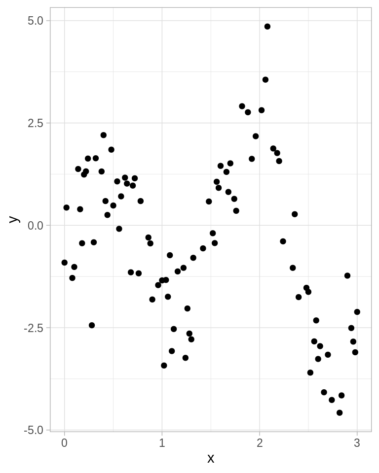
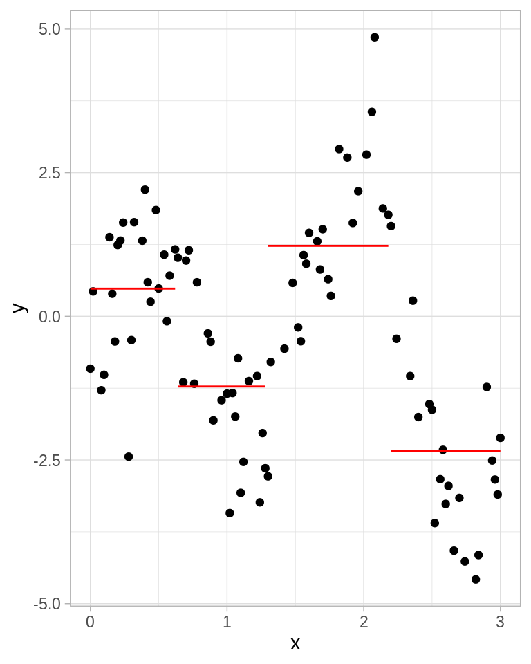
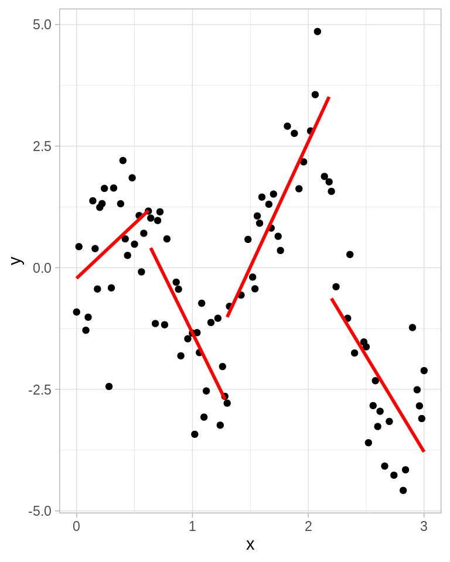
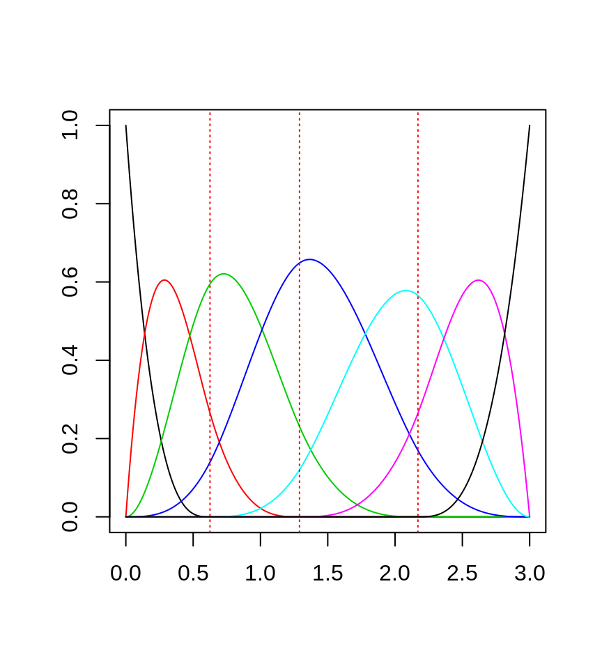
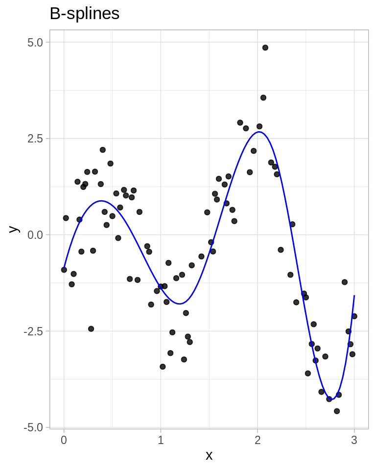
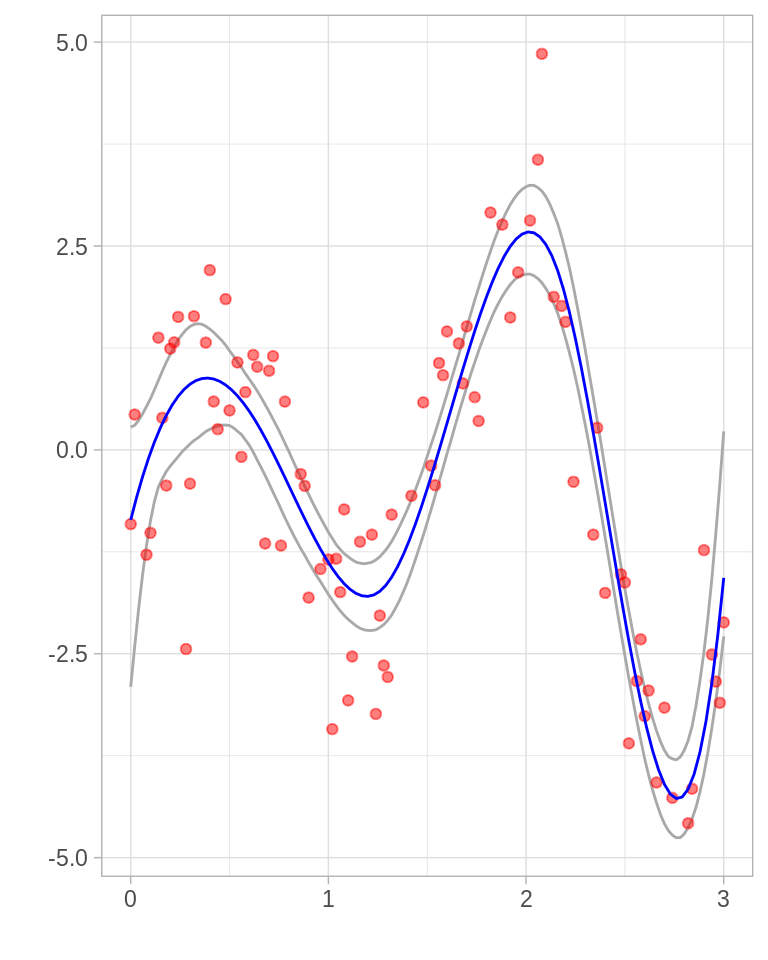
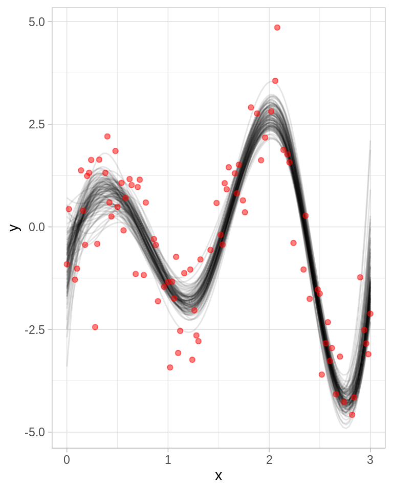
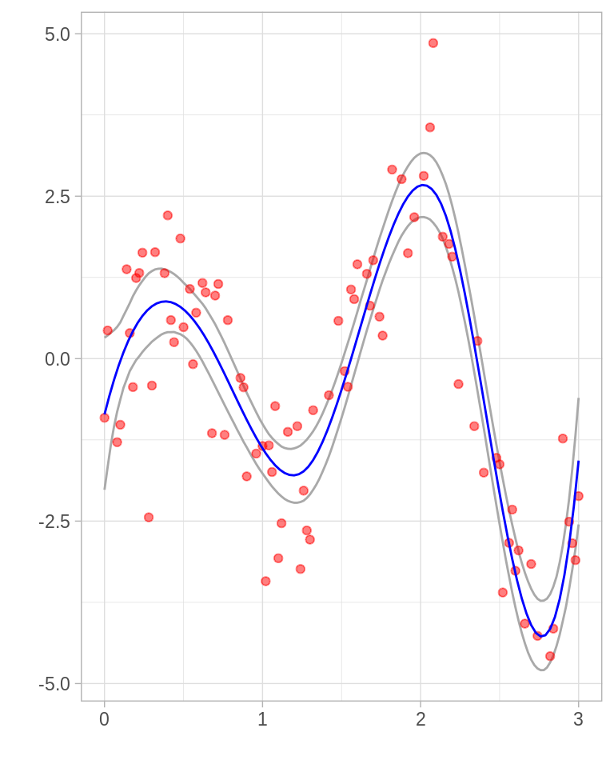
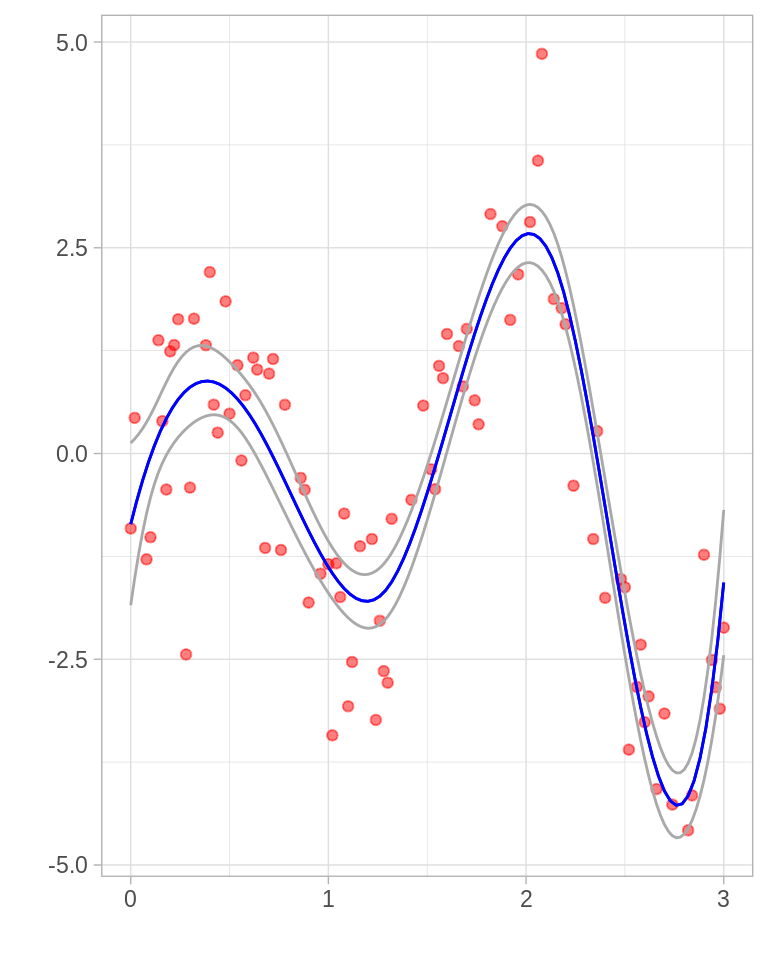

9.2 Bootstrap paramétrico
El método bootstrap se puede utilizar para el cálculo de errores estándar y de intervalos de confianza en un modelo paramétrico.
Recordemos que en bootstrap no paramétrico obteníamos muestras \(X_1^*,...,X_n^*\) de la distribución empírica \(P_n\).
En el caso de bootstrap paramétrico las muestras se obtienen de \(p(x,\hat{\theta})\) donde \(\hat{\theta}\) es una estimación de \({\theta}\) (esta se puede obtener por máxima verosimilitud).
Es así, que la diferencia entre la versión no paramétrica y la paramétrica es como construimos la distribución de la que vamos a seleccionar muestras.
Ejemplo. Sea \(X_1,...,X_n\) i.i.d. con \(X_i \sim N(\mu, \sigma^2)\). Sea \(\theta = g(\mu,\sigma)=\sigma/\mu\), esta cantidad se conoce como el coeficiente de variación. Estima \(\theta\) y su error estándar.
- Calculamos \(\hat{\mu}=\frac{1}{n} \sum{X_i}\) y \(\hat{\sigma}=\frac{1}{n} \sum(X_i-\hat{\mu})^2\).
Repetimos \(2\) y \(3\) B veces:
Simulamos \(X_1^*,...,X_n^*\) con \(X_i^*\sim N(\hat{\mu},\hat{\sigma}^2)\).
Calculamos \(\hat{\mu}^*=\frac{1}{n} \sum{X_i^*}\) y \(\hat{\sigma}^2=\frac{1}{n} \sum(X_i^*-\hat{\mu}^*)^2\) y \(\hat{\theta}=\hat{\sigma}^*/\hat{\mu}^*\).
Estimamos el error estándar como: \[\hat{se}_B=\sqrt{\frac{1}{B-1}\sum_{b=1}^B \big(\hat{\theta}^*(b) - \bar{\theta}\big)^2}\]
Veamos un ejemplo donde tenemos \(200\) observaciones con una distribución \(Normal(10, 5^2)\) y nos interesa estimar \(\theta=\sigma/\mu\).
n <- 200
x <- rnorm(n, mean = 10, sd = 5) # observaciones normales
# Paso 1: calcular mu_hat y sigma_hat
mu_hat <- mean(x)
sigma_hat <- sqrt(1 / n * sum((x - mu_hat) ^ 2))
# Pasos 2 y 3
thetaBoot <- function(){
# Simular X_1*,...X_N* con distribución N(mu_hat, sigma_hat^2)
x_boot <- rnorm(n, mean = mu_hat, sd = sigma_hat)
# Calcular mu*, sigma* y theta*
mu_boot <- mean(x_boot)
sigma_boot <- sqrt(1 / n * sum((x_boot - mu_boot) ^ 2))
sigma_boot / mu_boot # theta*
}
# Paso 4: Repetimos B = 2000 veces y estimamos el error estándar
sims_boot <- rerun(3000, thetaBoot()) %>% flatten_dbl()
sqrt(1 / 2999 * sum((sims_boot - sigma_hat/mu_hat) ^ 2))
#> [1] 0.02724524Comparamos con el método delta: \[\hat{se}=\frac{1}{\sqrt{n}}\bigg(\frac{1}{\hat{\mu}^4} + \frac{\hat{\sigma}^2}{2\hat{\mu}^2}\bigg)^{1/2}\]
 Supongamos que observamos \(70\) realizaciones de
una Bernoulli, de tal manera que observamos \(20\) éxitos, calcula un intervalo de
confianza usando bootstrap y comparalo con el correspondiente usando la
información de Fisher.
Supongamos que observamos \(70\) realizaciones de
una Bernoulli, de tal manera que observamos \(20\) éxitos, calcula un intervalo de
confianza usando bootstrap y comparalo con el correspondiente usando la
información de Fisher.
Ejemplo Bsplines: Bootstrap no paramétrico, bootstrap paramétrico y máxima verosimilitud
Ilustraremos los métodos usando un ejemplo de suavizamiento tomado de Hastie, Tibshirani, and Friedman (2001) para esto comenzamos creando una base de datos artificial:
set.seed(90984)
# simple harmonic motion
shm <- function(t, A = 1.5, omega = 4){ # Esta es una función sinusoidal
t * A * sin(omega * t)
}
n <- 90
x <- sample(seq(0, 3, 0.02), n) # creamos una base con n observaciones
y <- shm(x) + rnorm(length(x), sd = 1)
outliers <- sample(1:length(y), 4) # elijo 4 puntos al azar a los que agrego ruido
y[outliers] <- y[outliers] + rnorm(4, sd = 2)
toy <- data.frame(x, y)
ggplot(toy, aes(x, y)) +
geom_point()
En nuestro ejemplo los datos consisten en pares \(z_i=(x_i, y_i)\) donde \(y_i\) se entiende como la respuesta o la salida correspondiente a \(x_i\). De la gráfica de los datos es claro que la relación entre \(x\) y \(y\) no es lineal, por lo que usaremos un método de expansiones de base que permite mayor flexibilidad.
La idea básica detrás de expansión de bases es aumentar la dimensión del espacio de covariables (o predictores) creando variables adicionales que consisten en transformaciones de las variables originales \(X\), para luego usar modelos lineales en el espacio aumentado. Si denotamos por \(h_m(X)\) la \(m\)-ésima transformación de \(X\), con \(m = 1,...,M\), podemos modelar:
\[f(X)=\sum_{i=1}^M \beta_m h_m(X)\]
Lo conveniente de este enfoque es que una vez que determinamos las funciones base \(h_m\) los modelos son lineales en estas nuevas variables y podemos explotar las ventajas de usar modelos lineales. En lo que sigue supondremos que \(X\) es unidimensional (como en el ejemplo).
Dentro de los métodos de expansión de bases estudiaremos los splines. Una función spline está fromada por polinomios de grado \(k\), cada uno definido sobre un intervalo, y se unen entre sí en los límites de cada intervalo. Los lugares donde se unen se conocen como nudos (knots). Antes de proceder entendamos los polinomios por pedazos: un polinomio por pedazos se obtiene dividiendo el dominio de \(X\) en intervalos contiguos y representando a \(f\) por medio de un polinomio en cada intervalo. Por ejemplo una constante por pedazos:
library(Hmisc)
#> Loading required package: lattice
#> Loading required package: survival
#> Loading required package: Formula
#>
#> Attaching package: 'Hmisc'
#> The following objects are masked from 'package:dplyr':
#>
#> src, summarize
#> The following objects are masked from 'package:base':
#>
#> format.pval, units
toy_k <- toy
toy_k <- toy %>%
mutate(int = cut2(x, g = 4)) %>%
group_by(int) %>%
mutate(media = mean(y))
ggplot(toy_k, aes(x, y)) +
geom_point() +
geom_line(aes(x, y = media, group = int), color = "red")
Debido a que dividimos el dominio en regiones disjuntas, el estimador de mínimos cuadrados para el modelo \(f(X)=\sum \beta_m h_m(X)\) es \(\hat{\beta_m} = \bar{Y}\_m\) la media de \(Y\) en cada región con \(m=1,2,3,4\).
Ahora ajustamos un polinomio lineal por pedazos:
ggplot(toy_k, aes(x, y)) +
geom_point() +
geom_smooth(method = "lm", aes(x, y = y, group = int), color = "red", se = FALSE)
Normalmente preferimos que la función sea continua en los nudos, esto conlleva a restricciones es los parámetros o al uso de bases que incorporen las restricciones. Más aún, es conveniente restringir no solo a continuidad de la función sino a continuidad de las derivadas.
Supongamos que decidimos ajustar splines cúbicos a los datos, con \(3\) nudos ubicados en los cuartiles de \(X\). Esto corresponde a un espacio lineal de funciones, la dimensión del espacio es \(7\) (\(4\) regiones \(\times\) \(4\) parámetros por región - \(3\) nodos por \(3\) restricciones por nodo).
library(fda) # paquete con funciones útiles de splines
#> Loading required package: splines
#> Loading required package: Matrix
#>
#> Attaching package: 'Matrix'
#> The following objects are masked from 'package:tidyr':
#>
#> expand, pack, unpack
#>
#> Attaching package: 'fda'
#> The following object is masked from 'package:graphics':
#>
#> matplot
knots <- quantile(x)
# usamos la función create.bspline.basis para crear la base
base <- create.bspline.basis(
norder = 4, # polinomios cúbicos
breaks = knots # nodos en los cuartiles de x
)
plot(base, lty = "solid")
Podemos representar el espacio por medio de una expansión lineal en las funciones base:
\[\mu(x) = \sum_{j=1}^7 \beta_j h_j(x)\]
donde \(h_j(x)\) son las \(7\) funciones que graficamos en la figura superior. Podemos pensar en \(\mu(x)\) como una representación de la media condicional \(E(Y|X=x)\).
H <- eval.basis(x, base)
head(H)
#> bspl4.1 bspl4.2 bspl4.3 bspl4.4 bspl4.5 bspl4.6
#> [1,] 0 0.00000000 0.000000e+00 4.171308e-02 0.352541747 0.5536436
#> [2,] 0 0.00000000 0.000000e+00 1.898638e-05 0.003282264 0.1344214
#> [3,] 0 0.00000000 9.151512e-06 1.886607e-01 0.572668932 0.2386612
#> [4,] 0 0.00000000 2.470908e-04 2.301142e-01 0.578033931 0.1916048
#> [5,] 0 0.11986971 6.146891e-01 2.639151e-01 0.001526094 0.0000000
#> [6,] 0 0.02203905 4.885123e-01 4.678374e-01 0.021611259 0.0000000
#> bspl4.7
#> [1,] 0.05210157
#> [2,] 0.86227739
#> [3,] 0.00000000
#> [4,] 0.00000000
#> [5,] 0.00000000
#> [6,] 0.00000000Sea \(H\) la matriz de \(n \times 7\), donde el elemento \(ij\) corresponde a \(h_j(x_i)\). Entonces, el estimador usual de \(\beta\) (obtenido minimizando el error cuadrático) esta dado por: \[\hat{\beta} = (H^TH)^{-1}H^Ty\]
y con esto obtenemos: \(\hat{\mu}(x) = \sum_{j=1}^7 \hat{\beta_j} h_j(x)\)
beta_hat <- as.vector(solve(t(H) %*% H) %*% t(H) %*% toy$y)
beta_hat
#> [1] -0.8580413 1.1694904 1.2203256 -4.7069161 9.1974688 -8.5999809
#> [7] -1.5685756
# creamos una función que calcula mu(x)
mu <- function(x, betas){
as.numeric(betas %*% t(eval.basis(x, base)))
}
ggplot(toy, aes(x = x, y = y)) +
geom_point(alpha = 0.8) +
stat_function(fun = mu, args = list(betas = beta_hat), color = "blue") +
labs(title = "B-splines")
Bootstrap no paramétrico. Usemos bootstrap para calcular errores estándar, para esto tomamos muestras con reemplazo de los pares \(z_i = (x_i,y_i)\), para cada muestra bootstrap \(Z^*\) ajustamos un polinomio cúbico \(\hat{\mu}^*(x)\) y construimos bandas de confianza usando los intervalos de cada punto.
splinesBoot <- function(){
toy_boot <- sample_n(toy, size = n, replace = TRUE)
H <- eval.basis(toy_boot$x, base)
as.vector(solve(t(H) %*% H) %*% t(H) %*% toy_boot$y)
}
betas <- rerun(4000, splinesBoot()) %>% reduce(rbind)
splines_boot <- ggplot(toy, aes(x = x, y = y))
for (i in 1:100) {
splines_boot <- splines_boot +
stat_function(fun = mu, args = list(betas = betas[i, ]), alpha = 0.1)
}
splines_boot + geom_point(color = "red", alpha = 0.5)
La gráfica superior muestra \(100\) replicaciones bootstrap del suavizamiento. Construyamos los intervalos bootstrap, en cada \(x\) encontramos el \(2.5\%\) más chico y más grande.
# construimos los intervalos
x_grid <- seq(knots[1], knots[5], 0.02) # creamos un grid para evaluar mu(x)
H <- eval.basis(x_grid, base) # Evalúo la base en el rango
betas_list <- split(betas, seq(nrow(betas)))
y <- purrr::map_df(betas_list, ~ data_frame(x = x_grid, mu = as.vector(. %*% t(H))))
limites <- y %>%
group_by(x) %>%
summarise(
limite_inf = quantile(mu, probs = 0.025),
limite_sup = quantile(mu, probs = 0.975)
)
ggplot(limites) +
geom_line(aes(x = x, y = limite_inf), color = "darkgray") +
geom_line(aes(x = x, y = limite_sup), color = "darkgray") +
geom_point(data = toy, aes(x = x, y = y), color = "red", alpha = 0.5) +
stat_function(fun = mu, args = list(betas = beta_hat), color = "blue") +
labs(x = "", y = "")
Supongamos ahora que los errores se distribuyen normal: \[y = \mu(x) + \epsilon; \epsilon \sim N(0, \sigma^2)\] \[\mu(x) = \sum_{j=1}^7 \beta_j h_j(x)\]
utilicemos bootstrap paramétrico, simularemos \[y_i^* = \hat{\mu}(x_i) + \epsilon_i^*; \epsilon_i^* \sim N(0,\hat{\sigma}^2)\]
Para implementar bootstrap paramétrico comencemos calculando los estimadores de máxima verosimilitud: \[\hat{\beta} = (H^TH)^{-1}H^Ty\] y \[\hat{\sigma}^2=1/n \sum_{i=1}^n(y_i-\hat{\mu}(x_i))^2\]
mu_hat <- mu(toy$x, beta_hat)
sigma_hat <- sqrt(1 / n * sum((toy$y - mu_hat) ^ 2))
# creamos las muestras bootstrap (paramétrico)
splinesBootP <- function(){
toy_boot <- data.frame(x = toy$x, y = mu_hat + rnorm(n, 0, sigma_hat))
H <- eval.basis(toy_boot$x, base)
as.vector(solve(t(H) %*% H) %*% t(H) %*% toy_boot$y)
}
betas_p <- rerun(4000, splinesBootP()) %>% reduce(rbind)
splines_boot_p <- ggplot(toy, aes(x = x, y = y))
for (i in 1:100) {
splines_boot_p <- splines_boot_p +
stat_function(fun = mu, args = list(betas = betas_p[i, ]), alpha = 0.1)
}
splines_boot + geom_point(color = "red", alpha = 0.5) 
y construímos intervalos
# construimos los intervalos
x_grid <- seq(knots[1], knots[5], 0.02) # creamos un grid para evaluar mu(x)
H <- eval.basis(x_grid, base) # Evalúo la base en el rango
y <- betas_p %*% t(H) # calculo mu(x*)
betas_list <- split(betas_p, seq(nrow(betas)))
y <- purrr::map_df(betas_list, ~ data_frame(x = x_grid, mu = as.vector(. %*% t(H))))
limites <- y %>%
group_by(x) %>%
summarise(
limite_inf = quantile(mu, probs = 0.025),
limite_sup = quantile(mu, probs = 0.975)
)
ggplot(limites) +
geom_line(aes(x = x, y = limite_inf), color = "darkgray") +
geom_line(aes(x = x, y = limite_sup), color = "darkgray") +
geom_point(data = toy, aes(x = x, y = y), color = "red", alpha = 0.5) +
stat_function(fun = mu, args = list(betas = beta_hat), color = "blue") +
labs(x = "", y = "")
Máxima verosimilitud: \[\hat{Var}(\hat{\beta})=(H^T H) ^{-1}\hat{\sigma}^2\] donde \[\hat{\sigma}^2=1/n \sum_{i=1}^n(y_i-\hat{\mu}(x_i))^2\],
ahora, la matriz de información de \(\theta=(\beta,\sigma^2)\) es una diagonal con bloques y el bloque correspondiente a \(\beta\) es: \[I(\beta)=(H^TH)/\sigma^2\] de tal manera que la varianza estimada es \(I(\beta)=(H^TH)/\hat{\sigma}^2\). Podemos usar esto para construir las bandas en de errores estándar \(\hat{\mu}(x) = h(x)^T\hat{\beta}\) es:
\[\hat{se}=[h(x)^T(H^TH)^{-1}h(x)]^{1/2}\hat{\sigma}\]
seMu <- function(x){
# calculo h(x)
h <- eval.basis(x, base)
# calcilo se_hat(x)
se_hat <- as.numeric((h %*% solve(t(H) %*% H) %*% t(h)) ^ (1 / 2) * sigma_hat)
se_hat
}
max_ver_errores <- data.frame(x = x_grid,
y_min = mu(x_grid, beta_hat) - 2 * sapply(x_grid, seMu),
y_max = mu(x_grid, beta_hat) + 2 * sapply(x_grid, seMu)) %>%
gather(cuantil, valor, y_min, y_max)
ggplot(toy) +
geom_point(color = "red", aes(x = x, y = y), alpha = 0.5) +
stat_function(fun = mu, args = list(betas = beta_hat), color = "blue") +
geom_line(data = max_ver_errores, aes(x = x, y = valor, group = cuantil),
color = "darkgray") +
stat_function(fun = mu, args = list(betas = beta_hat), color = "blue") +
labs(x = "", y = "") 
En general el bootstrap paramétrico coinicide con máxima verosimilitud, la ventaja de bootstrap sobre máxima verosimilitud es que permite calcular estimaciones de máxima verosimilitud de errores estándar en escenarios donde no hay fórmulas disponibles. Por ejemplo, podríamos seleccionar el número y la ubicación de los nudos de manera adaptativa, usando validación cruzada. En este caso no hay fórmulas para el cálculo de errores estándar pero bootstrap sigue funcionando.
Sean \(X_1,...,X_n \sim N(\mu, 1)\). Sea
\(\theta = e^{\mu}\), crea una tabla de datos usando \(\mu=5\) que consista de
\(n=100\) observaciones.
Usa el método delta para estimar \(\hat{se}\) y crea un intervalo del \(95\%\) de confianza. Usa boostrap paramétrico para crear un intervalo del \(95\%\). Usa bootstrap no paramétrico para crear un intervalo del 95%. Compara tus respuestas.
Realiza un histograma de replicaciones bootstrap para cada método, estas son estimaciones de la distribución de \(\hat{\theta}\). El método delta también nos da una aproximación a esta distribución: \(Normal(\hat{\theta},\hat{se}^2)\). Comparalos con la verdadera distribución de \(\hat{\theta}\) (que puedes obtener vía simulación). ¿Cuál es la aproximación más cercana a la verdadera distribución?
Pista: \(se(\hat{\mu}) = 1/\sqrt{n}\)
Referencias
Hastie, Trevor, Robert Tibshirani, and Jerome Friedman. 2001. The Elements of Statistical Learning. Springer Series in Statistics. New York, NY, USA: Springer New York Inc.